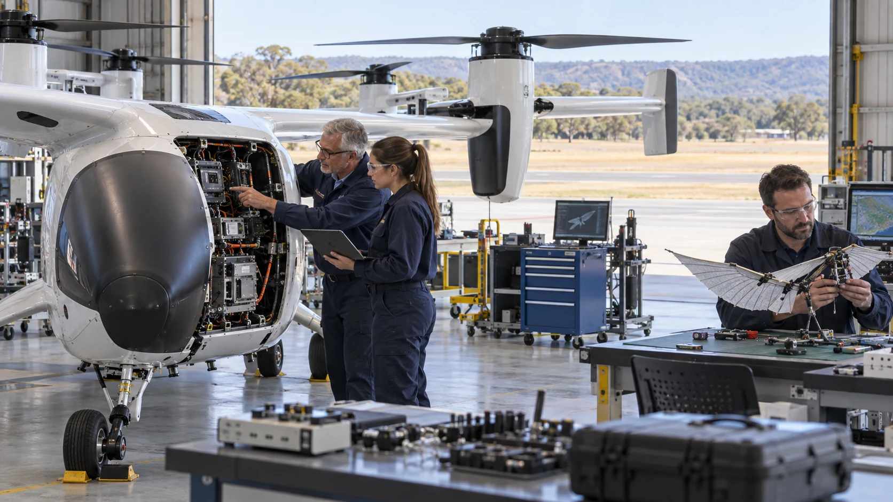

People and relationships
Who does the work, who holds the knowledge and which customer relationships depend on the departing owner?

A retiring owner gains a fair exit and room for their next chapter. Younger generations learn from the knowledge built over a lifetime, while AI, robotics and extended reality (XR) help them advance the business and share in its future.
An idea to explore together. Read the proposal, try the tools and follow the sources. No sign-up needed.
Public proposalThe focus is established businesses with staff, customers and a record of trading. The aim is to keep a working business going when its owner wants to leave.
New franchise territories, licence packages, empty premises and companies that exist only on paper are outside this proposal. Buying an existing franchise could be considered separately. No list of suitable businesses has yet been verified.
Who does the work, who holds the knowledge and which customer relationships depend on the departing owner?
What remains after properly costing replacement management, maintenance, employment obligations and working capital?
Cash, payment agreed for later, keeping a share of ownership and paid mentoring can be explored without assuming the owner wants to finance retirement risk.
Source trail: S05 · Business Queensland: Due diligence when buying a business
The idea could apply across Australian manufacturing, food production, construction, transport, healthcare and professional services. A handover would begin with the business as it is, then work out which new capabilities its people want to develop.
A precision workshop might make robot components. A marine business might develop autonomous survey vessels. An aviation supplier might work towards electric cargo aircraft or bird-inspired drones. These are possible directions, not announced acquisitions or products.

The owner would receive an agreed price for the business. The new owners would take on its costs, responsibilities and risks. Future profits could then support members, improvements and reserves for difficult times. Whether that works depends on the business and the terms of the sale.
A good handover includes the knowledge that keeps a business running: how to quote a job, solve an unusual fault or find the right supplier. The departing owner could be paid for an agreed period of mentoring. Experienced staff would help decide what needs to be recorded, taught or improved.
| Before transfer | Question for the next chapter |
|---|---|
| Owner-centred decisions | Which responsibilities can a capable management team genuinely assume? |
| Informal operating memory | What should be recorded, taught, tested and revised? |
| Customer goodwill | Which contracts, consents and relationships support continuity? |
| Technology backlog | Which improvements help the business without disrupting essential service? |
The aim is to help an established business do more with its skills, equipment and knowledge. Technology would be chosen around the work that needs doing, with staff involved in the change.
Help with scheduling, design, stock, quotes, administration and finding relevant knowledge. Check results against actual business needs.
Explore repetitive, strenuous or precise work where machines can help. Plan installation, training, maintenance and safe working arrangements.
Extended reality combines virtual, augmented and mixed reality. It can show digital guidance beside real equipment or provide a simulation to practise in. Learn before taking on unfamiliar responsibilities.
A repair workshop, fabricator and transport business might share skills and services. Food producers, distributors and caterers might do the same. The aim is useful cooperation and better outcomes for members. The number of businesses bought would tell only part of the story.
Source trail: S02 · ACCC: Thresholds for notifying acquisitions